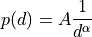
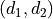
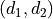
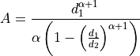

xopto.pf.miefractal module¶
- class MieFractal(alpha: float, nsphere: float, nmedium: float, wavelength: float, drange: Tuple[float, float] = (1e-08, 1e-05), nd: int = 1000)[source]¶
Bases:
xopto.pf.miepd.MiePdScattering phase function of fractally distributed (number density) spherical particles:

The value of parameter
 is computed so as to normalize the
integral of the number density function on the specified interval
drange =  to 1:
is computed so as to normalize the
integral of the number density function on the specified interval
drange =  to 1:
- Parameters
alpha (float) – Parameter alpha of the fractal distribution.
nsphere – Parameters passed to the
xopto.pf.miepd.MiePd()base class constructor. See help ofxopto.pf.miepd.MiePdclass for more details.nmedium – Parameters passed to the
xopto.pf.miepd.MiePd()base class constructor. See help ofxopto.pf.miepd.MiePdclass for more details.wavelength – Parameters passed to the
xopto.pf.miepd.MiePd()base class constructor. See help ofxopto.pf.miepd.MiePdclass for more details.drange – Parameters passed to the
xopto.pf.miepd.MiePd()base class constructor. See help ofxopto.pf.miepd.MiePdclass for more details.nd – Parameters passed to the
xopto.pf.miepd.MiePd()base class constructor. See help ofxopto.pf.miepd.MiePdclass for more details.
Examples
Scattering phase function of fractally distributed microspherical particles with alpha=2.4 and diameter from 10 nm to 10 um.
>>> from matplotlib import pyplot as pp >>> import numpy as np >>> >>> cos_theta = np.linspace(-1.0, 1.0, 1000) >>> fmie = MieFractal(alpha=2.4, drange=[10e-9, 10e-6], nsphere=1.6, nmedium=1.33, wavelength=550e-9, nd=1000) >>> >>> pp.figure() >>> pp.semilogy(cos_theta, fmie(cos_theta)) >>>